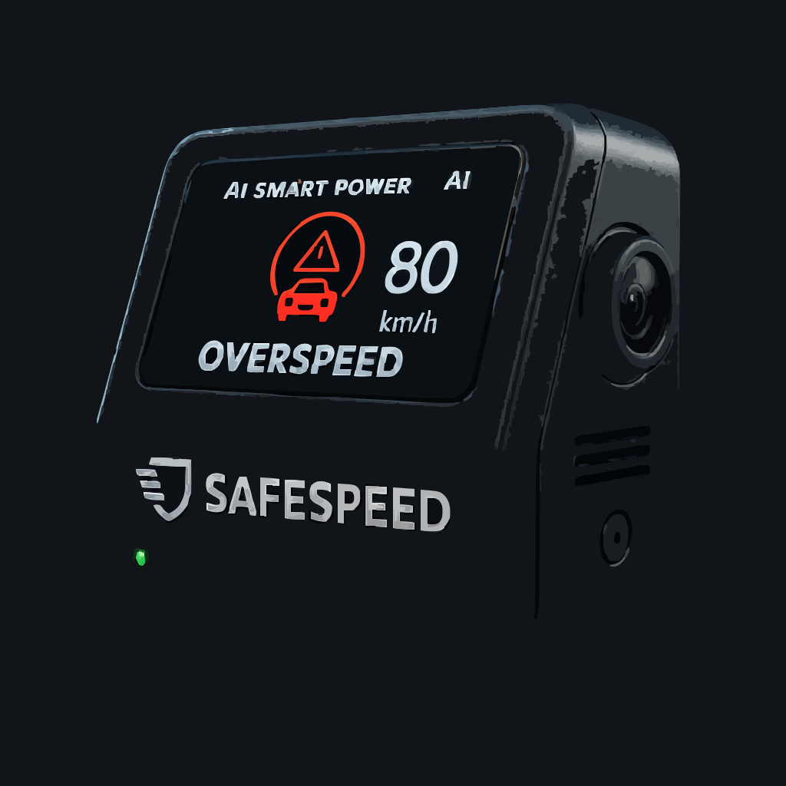

For Drivers
Peace of mind. Your story won’t get lost in the noise — honest driving is recognized and protected.
For Insurers
Less investigation, more resolution. Verified records reduce fraud and shorten claim cycles.
For Fleets
Accountability and improvement at scale. Turn journeys into insights that save time, cost, and reputation.
